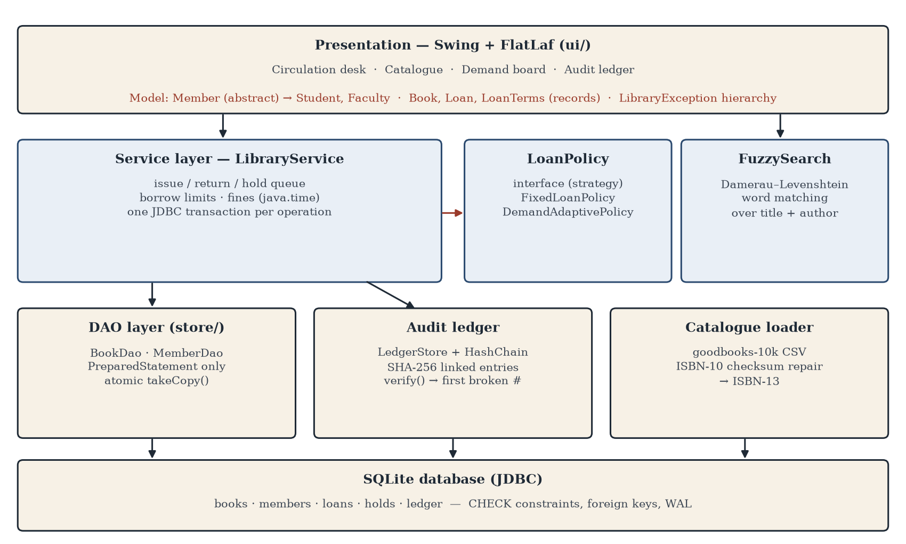
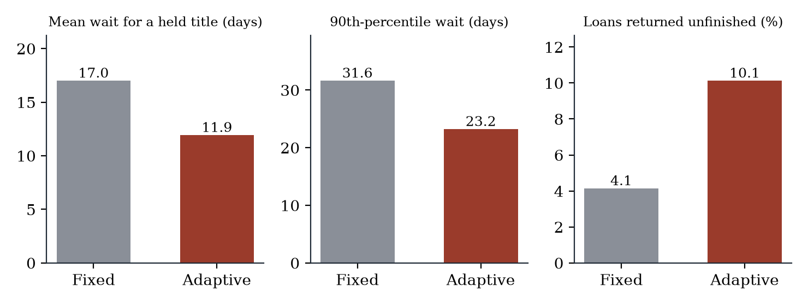
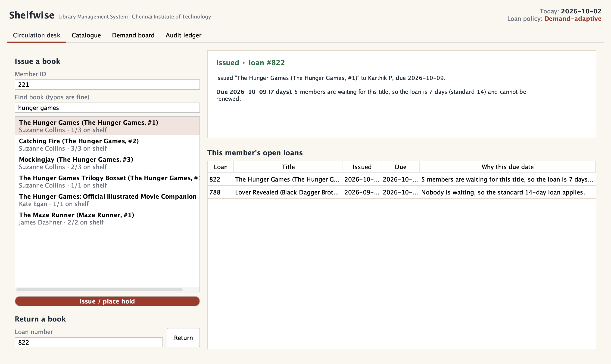
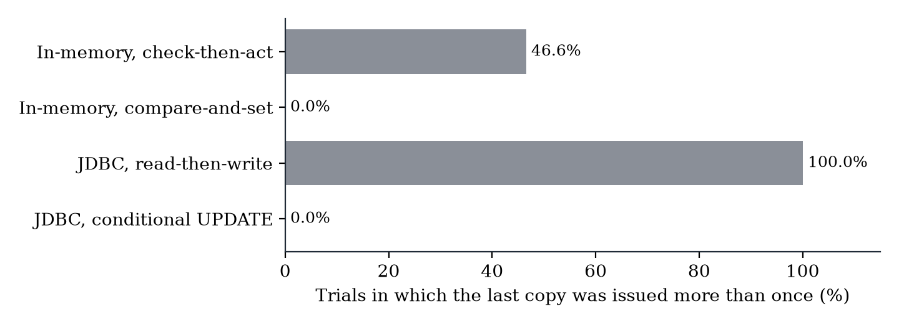
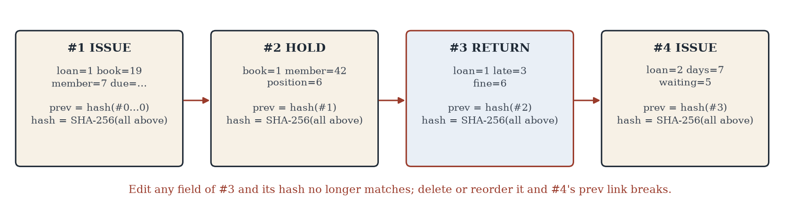

Demand-aware, race-free, tamper-evident library management in Java
Typical library software copies the paper register: one fixed loan period for every book, a search that fails on one typo, an issue button that can lend the last copy twice, and a fines history anyone with database access can quietly edit.


Simulated year, 400 members, demand from real Goodreads popularity, 5 seeds. Cost reported honestly: more loans returned unfinished.

Search with one typo: 75.6% vs 1.6% · 39/39 JUnit tests pass · 74.5% core line coverage


Popular books reach readers sooner, the system stays correct under concurrent use, and its history is provably intact. Next: department pilot, off-site hash anchoring, SMS hold alerts.